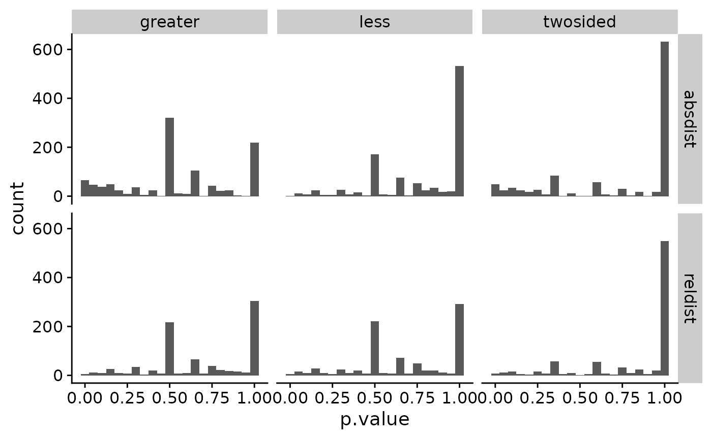
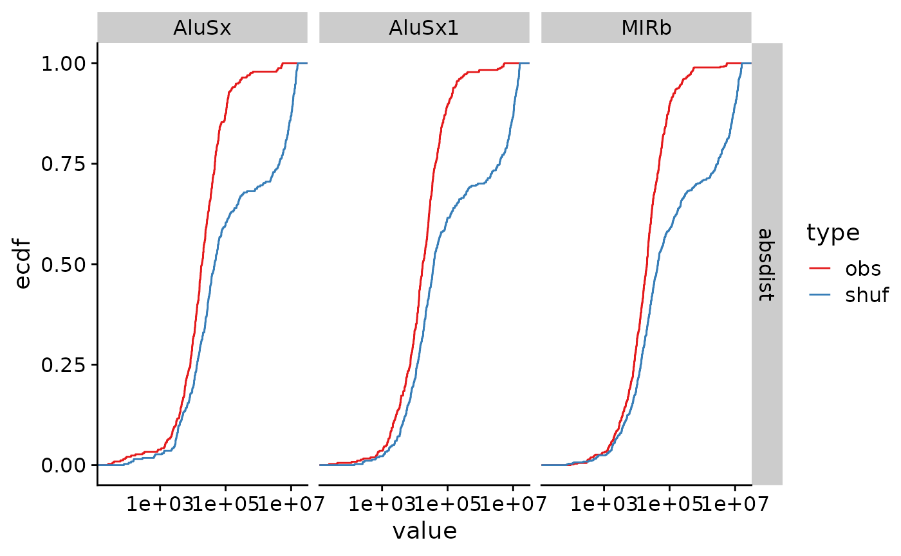

valr includes several functions for exploring statistical relationships between sets of intervals.
Calculate significance of overlaps between sets of intervals with bed_fisher() and bed_projection().
Quantify relative and absolute distances between sets of intervals with bed_reldist() and bed_absdist().
Quantify extent of overlap between sets of intervals with bed_jaccard().
In this vignette we explore the relationship between transcription start sites and repetitive elements in the human genome.
library(valr)
library(dplyr)
library(ggplot2)
library(cowplot)
library(tidyr)
# load repeats and genes. Data in the valr package is restricted to chr22; the entire
# files can be downloaded from UCSC.
rpts <- read_bed(valr_example('hg19.rmsk.chr22.bed.gz'), n_fields = 6)
genes <- read_bed(valr_example('hg19.refGene.chr22.bed.gz'), n_fields = 12)
# load chrom sizes
genome <- read_genome(valr_example('hg19.chrom.sizes.gz'))
# create 1 bp intervals representing transcription start sites
tss <- create_tss(genes)
tss
#> # A tibble: 1,267 x 6
#> chrom start end name score strand
#> <chr> <dbl> <dbl> <chr> <chr> <chr>
#> 1 chr22 16193008 16193009 NR_122113 0 -
#> 2 chr22 16157078 16157079 NR_133911 0 +
#> 3 chr22 16162065 16162066 NR_073459 0 +
#> 4 chr22 16162065 16162066 NR_073460 0 +
#> 5 chr22 16231288 16231289 NR_132385 0 -
#> 6 chr22 16287936 16287937 NM_001136213 0 -
#> 7 chr22 16274608 16274609 NR_046571 0 +
#> 8 chr22 16449803 16449804 NM_001005239 0 -
#> 9 chr22 17073699 17073700 NM_014406 0 -
#> 10 chr22 17082800 17082801 NR_001591 0 +
#> # … with 1,257 more rowsFirst we define a function that takes x and y intervals and computes distance statistics (using bed_reldist() and bed_absdist()) for specified groups. The value of each statistic is assigned to a .value column.
distance_stats <- function(x, y, genome, group_var, type = NA) {
group_by_(x, .dots = group_var) %>%
do(
reldist = bed_reldist(., y, detail = TRUE) %>%
select(.value = .reldist),
absdist = bed_absdist(., y, genome) %>%
select(.value = .absdist)
) %>%
tidyr::gather_('stat', 'value', setdiff(names(.), list(group_var))) %>%
mutate(type = type)
} We use the distance_stats() function to apply the bed_absdist() function to each group of data.
obs_stats <- distance_stats(rpts, tss, genome, 'name', 'obs')
#> Warning: group_by_() is deprecated.
#> Please use group_by() instead
#>
#> The 'programming' vignette or the tidyeval book can help you
#> to program with group_by() : https://tidyeval.tidyverse.org
#> This warning is displayed once per session.
obs_stats
#> # A tibble: 2,106 x 4
#> name stat value type
#> <chr> <chr> <list> <chr>
#> 1 (A)n reldist <tibble [27 × 1]> obs
#> 2 (AAAAACA)n reldist <tibble [1 × 1]> obs
#> 3 (AAAAC)n reldist <tibble [6 × 1]> obs
#> 4 (AAAAG)n reldist <tibble [2 × 1]> obs
#> 5 (AAAAT)n reldist <tibble [3 × 1]> obs
#> 6 (AAAATA)n reldist <tibble [1 × 1]> obs
#> 7 (AAAATAA)n reldist <tibble [1 × 1]> obs
#> 8 (AAAC)n reldist <tibble [2 × 1]> obs
#> 9 (AAACA)n reldist <tibble [1 × 1]> obs
#> 10 (AAACAA)n reldist <tibble [1 × 1]> obs
#> # … with 2,096 more rowsAnd the same is done for a set of shuffled group of data. bed_shuffle() is used to shuffle coordinates of the repeats within each chromosome (i.e., the coordinates change, but the chromosome stays the same.)
shfs <- bed_shuffle(rpts, genome, within = TRUE)
shf_stats <- distance_stats(shfs, tss, genome, 'name', 'shuf')Now we can bind the observed and shuffled data together, and do some tidying to put the data into a format appropriate for a statistical test. This involves:
unnest()ing the data framesname), stat (reldist or absdist) and type (obs or shf)tidyr::spread() to create two new obs and shuf columnsNA values.res <- bind_rows(obs_stats, shf_stats) %>%
tidyr::unnest(value) %>%
group_by(name, stat, type) %>%
mutate(.id = row_number()) %>%
tidyr::spread(type, .value) %>%
na.omit()
res
#> # A tibble: 16,736 x 5
#> # Groups: name, stat [1,906]
#> name stat .id obs shuf
#> <chr> <chr> <int> <dbl> <dbl>
#> 1 (A)n absdist 1 5120782 15567343
#> 2 (A)n absdist 2 226477 14228428
#> 3 (A)n absdist 3 31242 12513096
#> 4 (A)n absdist 4 8930 10357877
#> 5 (A)n absdist 5 41316 9916887
#> 6 (A)n absdist 6 22519 9768727
#> 7 (A)n absdist 7 15173 5190379
#> 8 (A)n absdist 8 21985 4421874
#> 9 (A)n absdist 9 13458 1357741
#> 10 (A)n absdist 10 134007 19465
#> # … with 16,726 more rowsNow that the data are formatted, we can use the non-parametric ks.test() to determine whether there are significant differences between the observed and shuffled data for each group. broom::tidy() is used to reformat the results of each test into a data_frame, and the results of each test are gathered to into a type column for each test type.
library(broom)
pvals <- res %>% do(twosided = tidy(ks.test(.$obs, .$shuf)),
less = tidy(ks.test(.$obs, .$shuf, alternative = 'less')),
greater = tidy(ks.test(.$obs, .$shuf, alternative = 'greater'))) %>%
tidyr::gather(alt, type, -name, -stat) %>%
unnest(type) %>%
select(name:p.value) %>%
arrange(p.value)Histgrams of the different stats help visulaize the distribution of p.values.
ggplot(pvals, aes(p.value)) +
geom_histogram(binwidth = 0.05) +
facet_grid(stat ~ alt) + theme_cowplot()
We can also assess false discovery rates (q.values) using p.adjust().
pvals <-
group_by(pvals, stat, alt) %>%
mutate(q.value = p.adjust(p.value)) %>%
ungroup() %>%
arrange(q.value)Finally we can visualize these results using stat_ecdf().
res_gather <- tidyr::gather(res, type, value, -name, -stat, -.id)
signif <- head(pvals, 5)
res_signif <-
signif %>%
left_join(res_gather, by = c('name', 'stat'))
ggplot(res_signif, aes(x = value, color = type)) +
stat_ecdf() +
facet_grid(stat ~ name) + theme_cowplot() + scale_x_log10() +
scale_color_brewer(palette = 'Set1')
bed_projection() is a statistical approach to assess the relationship between two intervals based on the binomial distribution. Here, we examine the distribution of repetitive elements within the promoters of coding or non-coding genes.
First we’ll extract 5 kb regions upstream of the transcription start sites to represent the promoter regions for coding and non-coding genes.
# create intervals 5kb upstream of tss representing promoters
promoters <-
bed_flank(genes, genome, left = 5000, strand = TRUE) %>%
mutate(name = ifelse(grepl('NR_', name), 'non-coding', 'coding')) %>%
select(chrom:strand)
# select coding and non-coding promoters
promoters_coding <- filter(promoters, name == 'coding')
promoters_ncoding <- filter(promoters, name == 'non-coding')
promoters_coding
#> # A tibble: 973 x 6
#> chrom start end name score strand
#> <chr> <int> <int> <chr> <chr> <chr>
#> 1 chr22 16287937 16292937 coding 0 -
#> 2 chr22 16449804 16454804 coding 0 -
#> 3 chr22 17073700 17078700 coding 0 -
#> 4 chr22 17302589 17307589 coding 0 -
#> 5 chr22 17302589 17307589 coding 0 -
#> 6 chr22 17489112 17494112 coding 0 -
#> 7 chr22 17560848 17565848 coding 0 +
#> 8 chr22 17560848 17565848 coding 0 +
#> 9 chr22 17602213 17607213 coding 0 -
#> 10 chr22 17602257 17607257 coding 0 -
#> # … with 963 more rows
promoters_ncoding
#> # A tibble: 294 x 6
#> chrom start end name score strand
#> <chr> <int> <int> <chr> <chr> <chr>
#> 1 chr22 16152078 16157078 non-coding 0 +
#> 2 chr22 16157065 16162065 non-coding 0 +
#> 3 chr22 16157065 16162065 non-coding 0 +
#> 4 chr22 16193009 16198009 non-coding 0 -
#> 5 chr22 16231289 16236289 non-coding 0 -
#> 6 chr22 16269608 16274608 non-coding 0 +
#> 7 chr22 17077800 17082800 non-coding 0 +
#> 8 chr22 17156430 17161430 non-coding 0 -
#> 9 chr22 17229328 17234328 non-coding 0 -
#> 10 chr22 17303363 17308363 non-coding 0 +
#> # … with 284 more rowsNext we’ll apply the bed_projection() test for each repeat class for both coding and non-coding regions.
# function to apply bed_projection to groups
projection_stats <- function(x, y, genome, group_var, type = NA) {
group_by_(x, .dots = group_var) %>%
do(n_repeats = nrow(.),
projection = bed_projection(., y, genome)) %>%
mutate(type = type)
}
pvals_coding <- projection_stats(rpts, promoters_coding, genome, 'name', 'coding')
pvals_ncoding <- projection_stats(rpts, promoters_ncoding, genome, 'name', 'non_coding')
pvals <-
bind_rows(pvals_ncoding, pvals_coding) %>%
ungroup() %>%
tidyr::unnest() %>%
select(-chrom)
#> Warning: `cols` is now required.
#> Please use `cols = c(n_repeats, projection)`
# filter for repeat classes with at least 10 intervals
pvals <- filter(pvals,
n_repeats > 10,
obs_exp_ratio != 0)
# adjust pvalues
pvals <- mutate(pvals, q.value = p.adjust(p.value))
pvals
#> # A tibble: 179 x 7
#> name n_repeats p.value obs_exp_ratio lower_tail type q.value
#> <chr> <int> <dbl> <dbl> <chr> <chr> <dbl>
#> 1 (A)n 28 0.00353 4.72 FALSE non_coding 0.558
#> 2 (AT)n 48 0.298 0.917 FALSE non_coding 1
#> 3 (CA)n 31 0.156 1.42 FALSE non_coding 1
#> 4 (GT)n 42 0.247 1.05 FALSE non_coding 1
#> 5 (T)n 61 0.405 0.721 FALSE non_coding 1
#> 6 (TG)n 40 0.0622 2.20 FALSE non_coding 1
#> 7 A-rich 54 0.348 0.815 FALSE non_coding 1
#> 8 Alu 15 0.0446 2.93 FALSE non_coding 1
#> 9 AluJb 271 0.0225 1.79 FALSE non_coding 1
#> 10 AluJo 208 0.0216 1.90 FALSE non_coding 1
#> # … with 169 more rowsThe projection test is a two-tailed statistical test. A significant p-value indicates either enrichment or depletion of query intervals compared to the reference interval sets. A value of lower_tail = TRUE column indicates that the query intervals are depleted, whereas lower_tail = FALSE indicates that the query intervals are enriched.